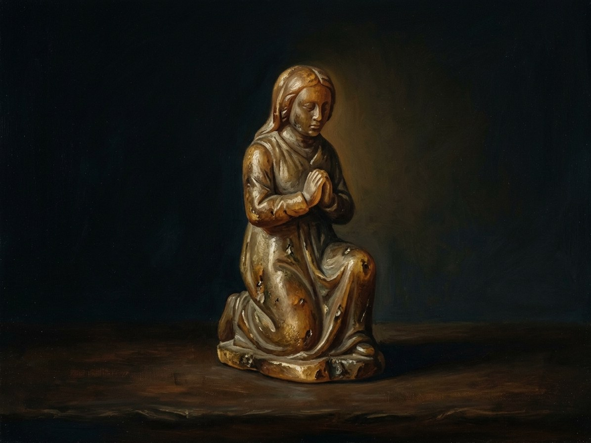

Klūpančioji (amber statue, Palanga)¶
Description¶
A human-sized kneeling woman of honey-coloured amber, with small insects and grains of sand suspended inside. She kneels at the tide line facing the sea. Her head is bowed and her hands are clasped (Book I ch. 27; the books now agree on this pose). Her face is “like candle wax”. Fishermen tie ribbons to her neck.
Klūpančioji (amber statue, Palanga)

Klūpančioji (amber statue, Palanga) · artifact¶
Type |
artifact |
Years |
made 1384 |
Note |
The amber kneeling woman of Palanga; sacred anchor of the Amber Queen at the shore. |
Power¶
The Amber Queen’s last anchor on land. The Amber Queen’s last anchor on land, 1384-1450 (Gintaro Karalienė). She calms storms along that shore. She is warm to the touch and light as a sleeping child. Her glow tracks how well she is remembered.
Rule & cost¶
Whoever moves her dies at sea (Power systems §5). Gifts of bread or fish must be left for her when amber is taken from the shore; amber taken without an offering stays cold for life (Book V ch. 25). She dims as people forget her story (Book V ch. 25).
Origin¶
Left where Birutė vanished into the sea at Palanga on the night of the Amber Sacrifice, 1384 (Book I ch. 27), the payment of the Amber Debt that bought the Hidden Groves.
Arc across the books¶
No one “holds” her; she is bound only to the Amber Queen, as her anchor.
1384. The wave leaves her on the sand (Book I ch. 27).
March 1410. Vytautas visits; she pales and the Queen’s voice grows quieter (Book III ch. 14, which also has the Queen speak through the pebble).
Oct 1417. The priest Andžej Radzimski takes six men to remove her. Hammers fail; the boat sinks calmly; she is back at dawn with six crosses in her hands (Book IV ch. 8).
1445-1446. The village forgets and she goes grey (Book V ch. 25).
March 1450. She glows again the evening Žiežirba tells his stories, and is the pyre’s site (Book V ch. 29). The closing tide of Book V is Birutė’s own, the water reaching her chin (Book V ch. 29); the sea takes the statue (Book V ch. 29); in 1553 the mother’s talk of “the kneeling woman” is memory and tale (Book V ch. 30).
Relations
Anchors: Gintaro Karalienė (Amber Queen) (1384–1450)
Caused by: Birutė’s Amber Sacrifice
Created by: Birutė
Ended by: Žiežirba dies; cremated on the beach — The sea takes the statue.
Bearing Cannot be borne. Whoever moves her dies at sea
Holders None. She is held by no one: she kneels at the tide line at Palanga from 1384. She anchors the Amber Queen 1384 to 1450
Power The Amber Queen's last anchor on land. She calms storms along that shore. Warm to the touch, light as a sleeping child; her glow tracks how well she is remembered
Rule & cost Whoever moves her dies at sea. Gifts of bread or fish are left for her whenever amber is taken from the shore. She dims as people forget her story
Appearance. A human-sized kneeling woman of honey-coloured amber with insects and grains of sand suspended inside. Head bowed, hands clasped, face like candle wax. Fishermen tie ribbons to her neck.
Origin. Left where Birutė vanished into the sea at Palanga on the night of the Amber Sacrifice, 1384, the payment of the Amber Debt that bought the Hidden Groves.
The mover dies. In October 1417 the priest Andžej Radzimski takes six men to remove her. Hammers fail, the boat sinks calmly, and she is back at dawn with six crosses in her hands (Book IV ch. 8).
Forgetting. In 1445-46 the village forgets, and she goes grey.
Glowing again. March 1450: she glows the evening the Flame-Keeper tells his stories and is the pyre's site.
The sea. The sea takes the statue (Book V ch. 29). By 1553 she is memory and tale.
Connections¶
graph LR
amber_queen["Gintaro Karalienė (Amber Queen)"]
birute["Birutė"]
ev_birute_sacrifice["Birutė's Amber Sacrifice"]
ev_keeper_dies["Žiežirba dies; cremated on the beach"]
kneeling_woman["Klūpančioji (amber statue, Palanga)"]
kneeling_woman -->|Created by| birute
kneeling_woman -->|Anchors| amber_queen
ev_birute_sacrifice -->|Causes| kneeling_woman
ev_keeper_dies -->|Ends| kneeling_woman
style kneeling_woman stroke-width:3px